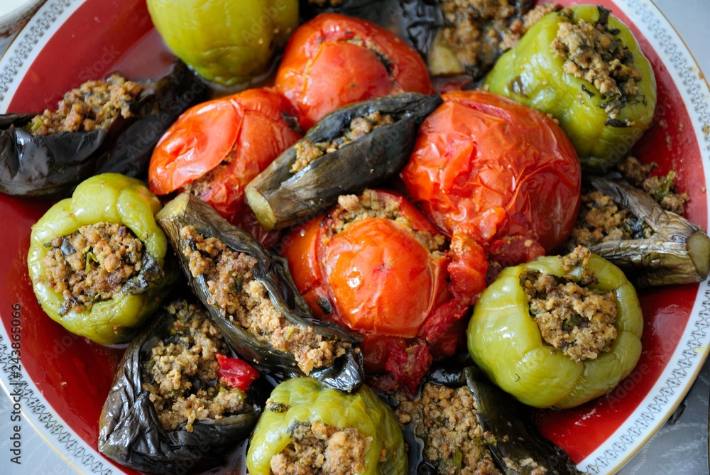

Home
Three sisters dolma recipe

Description
This Azerbaijani dish features a delicious mix of stuffed vegetables—eggplant, bell peppers, and tomatoes—filled
with a savory rice and meat mixture. These veggies are cooked in a rich tomato-based sauce, making them tender
and flavorful. It’s a comforting and traditional dish often served as a main course during gatherings and
special occasions.
Ingredients
- 1 cup rice (washed)
- 300g minced lamb or beef (or a mix of both)
- 1 large onion, finely chopped
- 2-3 cloves garlic, minced
- 2-3 tablespoons fresh dill, chopped (optional)
- 2-3 tablespoons fresh parsley, chopped
- 1 teaspoon ground cumin
- 1 teaspoon ground black pepper
- Salt to taste
- 1-2 tablespoons vegetable oil for frying the filling
- 2 large tomatoes
- 2 large bell peppers
- 2 medium-sized eggplants
- 2 cups tomato paste or pureed tomatoes
- 1-2 cups water (depending on desired consistency)
- 1 tablespoon vegetable oil
- 1 teaspoon ground paprika (optional for extra flavor)
- 1 teaspoon sugar (optional, to balance acidity)
- Salt and pepper to taste
- Fresh herbs for garnish (optional, like dill or parsley)
Steps to prepare
- Eggplant: Slice the eggplants in half lengthwise and scoop out the flesh, leaving about a 1-inch thick
shell. Salt the eggplant halves and let them sit for about 30 minutes to draw out any bitterness, then rinse
and pat dry.
- Tomatoes and Bell Peppers: Cut off the tops of the bell peppers and tomatoes. Scoop out the insides to
create hollow spaces for stuffing. Save the tops to cover the stuffed vegetables while cooking.
- Heat the vegetable oil in a large skillet over medium heat. Add the finely chopped onion and minced garlic,
cooking until soft and golden.
- Add the minced meat and cook until browned, breaking it into small pieces as it cooks.
- Stir in the rice and cook for another 2-3 minutes.
- Add the fresh herbs (dill and parsley), cumin, black pepper, and salt to the meat and rice mixture, then
remove from heat and let it cool slightly.
- Carefully stuff each hollowed-out vegetable (eggplant, bell pepper, and tomato) with the meat and rice
mixture. Do not overstuff, as the rice will expand as it cooks. Place the vegetable tops back on after
filling.
- In a large pot, heat vegetable oil and sauté the tomato paste or pureed tomatoes. Add water to make a sauce,
seasoning with salt, pepper, paprika, and a pinch of sugar (if using). Stir well and let it simmer for about
5 minutes.
- Arrange the stuffed vegetables in a large pot, packing them in tightly so they won’t move around while
cooking. Pour the tomato sauce over the vegetables until they are nearly covered.
- Cover the pot and simmer over low heat for 40-50 minutes, or until the vegetables are tender and the rice is
cooked. Check occasionally, and add more water if necessary.
- Once done, remove from heat and let the dolma rest for 10-15 minutes before serving. Garnish with fresh
herbs like parsley or dill if desired.
- Serve hot, with a side of yogurt or a fresh salad for a complete meal.